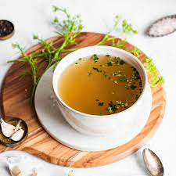

Broth

Description
Is a savory liquid made of water in which bones, meat, fish or vegetables have been simmered.
Ingridients
- Bones
- Vegetable Oil
- Large carrot
- Celery root
- Onions
- Garlic
- Tomato paste
- Dry red wine
- Sprig sage
- Sprigs lemon thyme
- Bay leaves
- Allspice
- Peppercorns
Steps
- Preheat oven to 230°C (approximately 450°F). Rinse bones and pat dry. Spread bones on an oiled baking sheet or baking pan and roast about 30 minutes, turning occasionally.
- Cut leek lengthwise, rinse under running water, trim and cut into small pieces.
- Peel carrots, celery root, onion and garlic and cut into chunks.
- In a saucepan, sauté vegetables in 2 tablespoons oil until golden brown. Add bones to pan and stir in tomato paste.
- Deglaze pan with a dash of red wine and let boil down almost completely. Pour remaining red wine and about 2 liters (approximately 8 cups) water into pan and simmer over medium heat about 1 hour.
- Skim foam as necessary.
- Tie sage, lemon thyme and bay leaves into a bunch and add to pan with allspice berries and peppercorns. Simmer 1 to 1 1/2 more hours.
- Line a sieve with cloth.
- Strain broth through prepared sieve into another pan.